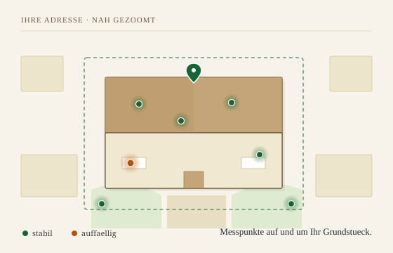
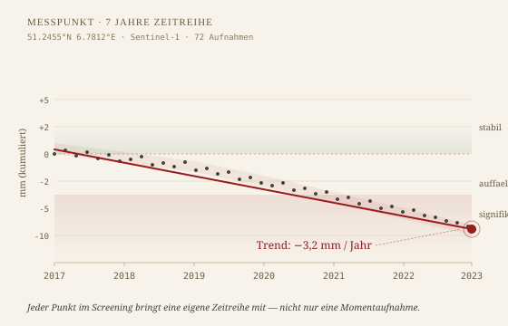
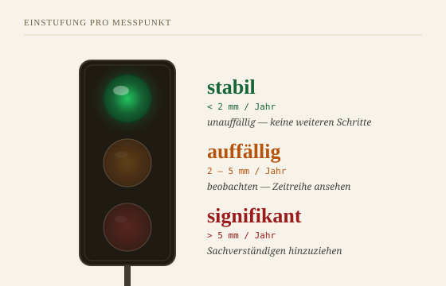

PREVIEW v4.2 · B als Nachbarschaft · Umlaute zurück · Quellen auf Extra-Seite
Bodenrisiko-Check für Immobilienkäufer
Bodenrisiken prüfen, bevor Sie unterschreiben.
Klarheit für Ihre Kaufentscheidung.
Bevor Sie unterschreiben, sehen Sie: Bewegt sich der Boden an dieser Adresse? Und wie sieht es in den Vorsorge-Grenzwerten aus? Sieben Jahre Satellitendaten, ausgewertet auf offiziellen öffentlichen Quellen.
Foto: Markus Spiske / Pexels · Bamberg
Foto 1 — Hero: unverändert seit v3, Copy jetzt laienfreundlicher
So sieht Ihre Adresse bei uns aus
Messpunkte in Ihrer unmittelbaren Umgebung.
Satelliten sehen Fixpunkte am Boden — Dächer, Fassaden, Straßen. In der Stadt liegen oft mehrere davon direkt auf Ihrem Haus. In Vorort-Siedlungen auch auf Nachbardach, Gehweg oder Carport. Wichtig ist nicht der einzelne Punkt, sondern das Gesamtbild.
Mehrere Messpunkte in Ihrer unmittelbaren Nähe — je nach Lage auf und um das Haus
Jeder Punkt mit eigener Bewegungsrate und Ampel-Einstufung
Boden bewegt sich selten punktgenau — das Muster in der Umgebung ist die Aussage

SVG B — Messpunkte auf/um das Grundstück:
keine "Dach Nord / Fassade West"-Zuordnung mehr. Dots clustern auf und um das Haus
mit ehrlicher Ungenauigkeit, Ampel-Farben nur.
Tiefe pro Punkt
Nicht ein Wert. Sieben Jahre Verlauf.
Jeder Messpunkt bringt seinen kompletten Verlauf seit 2017 mit. Sie sehen nicht nur, wo es heute steht — Sie sehen, ob es in den letzten Jahren schneller oder langsamer wurde.
Ein einzelner Wert ist ein Foto. Sieben Jahre Verlauf sind ein Film.

SVG A — KPI-Story:
"−22 mm" als grosse Zahl, Chart nur noch als Beleg daneben
Einstufung pro Punkt
Ab wann wird’s kritisch?
Drei Stufen. Orientiert an gängigen Fachstandards für Bodenbewegung.

SVG C — echte Verkehrsampel:
drei Lampen im Gehaeuse, minimal Text daneben. Grüne leuchtet.
Premium in Entwicklung
Der ausführliche Bericht kommt bald.
Schwermetall-Analyse, Bodenart-Details und vollständige Zeitreihe jedes Messpunkts. Trag dich in die Warteliste ein — Early-Bird-Rabatt für die ersten 100.
Foto: Deva Darshan / Pexels
D — Quellen nur noch als Link:
Der ganze Navy-Badge-Strip ist weg. Wer wissen will was genau dahintersteckt,
klickt im Footer auf "Datenquellen und Methodik" — das fertige
/datenquellen.html existiert schon.
v4.2-Korrektur (über v4.1)
B: statt "Wir messen IHR Haus, nicht die Gegend" jetzt ehrlich: Nachbarschaftsausschnitt mit Straße und Nachbarhäusern, Ihr Grundstück in der Mitte hervorgehoben, Messpunkte verteilt — einige aufs Haus, einige Nachbarn, einige Gehweg.
Umlaute überall zurück (ä ö ü ß). SVG-Parse bleibt gültig, da UTF-8.
Datenquellen: Navy-Badge-Strip komplett weg. Nur noch ein dezenter Footer-Link "Datenquellen und Methodik" auf die vorhandene /datenquellen.html.
Copy überall laienfreundlicher: "ein Foto vs. ein Film" für die Zeitreihe, "Bevor Sie unterschreiben, sehen Sie:…" statt "Automatisiertes Screening".
Feedback aus dem Team-Chat: Tech-Sprache (Copernicus, LUCAS, Pipeline) war für Otto Normalverbraucher zu irritierend. System-Namen gehören später auf geoforensic.de (B2B / Gutachter / Versicherungen), nicht auf bodenbericht.de.